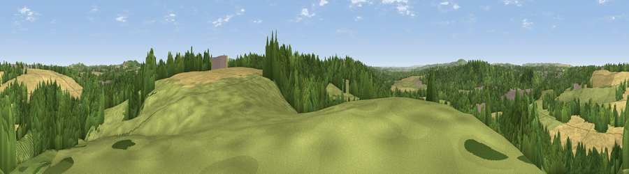

Viewpoint near Shincliffe
#34105 in England · top 74% of its area beats it · near ShincliffeThe view, rendered

A 360° render of this exact spot computed from the terrain model, tree cover and land cover — summer colours, afternoon light, calibrated against photographs of famous viewpoints. Real trees, hedges and buildings will differ in detail.
The panorama
Grey silhouette: terrain skyline in each direction (720 bearings, Earth curvature and refraction included). Dashed green: skyline with trees (+15 m) and buildings (+8 m) as obstacles. Blue strip: how far the ground is visible on each bearing.
Where the view opens
Wedge length = distance to the farthest visible ground on that bearing (vegetation-aware). Rings at 10, 25 and 50 km.
What fills the view
36% woodland · 34% cropland · 26% grassland · 3% built-up
Angular shares of the visible panorama (visual magnitude), not map area. Landscape diversity 0.52 (0–1 Shannon).
Key numbers
More beautiful places nearby
The staircase of upgrades: each row has a higher view potential than everything closer. Driving times are estimates from straight-line distance, calibrated against real road routing — check an actual route before setting out.
| Place | Direction | Drive | Score |
|---|---|---|---|
| Viewpoint near Shincliffe | W · 1 km | ~4 min | 41.4 |
| Viewpoint near High Shincliffe | SSW · 2 km | ~5 min | 44.5 |
| Viewpoint near Bowburn | SE · 4 km | ~9 min | 69.0 |
| Viewpoint near Quarrington Hill | SE · 5 km | ~10 min | 73.1 |
| Viewpoint near Houghton-le-Spring | NE · 12 km | ~23 min | 73.7 |
| Viewpoint near Houghton-le-Spring | NE · 13 km | ~23 min | 76.0 |
| Viewpoint near Sunniside | NNW · 19 km | ~32 min | 77.6 |
| Pontop Pike | NW · 19 km | ~32 min | 77.8 |
54.76240, -1.54424 · source: screening · position refined by local search. Computed location — check access rights before visiting.